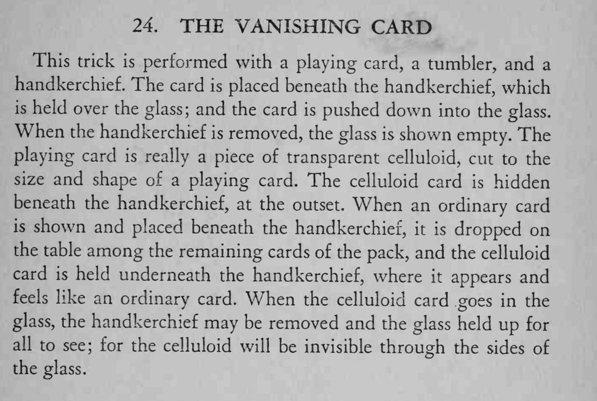

一张牌被手帕包着推进玻璃杯，手帕一掀，杯子里什么也没有。
手帕要够厚够大，才能完全遮住赛璐珞片。

This trick is performed with a playing card, a tumbler, and a handkerchief. The card is placed beneath the handkerchief, which is held over the glass; and the card is pushed down into the glass. When the handkerchief is removed, the glass is shown empty. The playing card is really a piece of transparent celluloid, cut to the size and shape of a playing card. The celluloid card is hidden beneath the handkerchief, at the outset. When an ordinary card is shown and placed beneath the handkerchief, it is dropped on the table among the remaining cards of the pack, and the celluloid card is held underneath the handkerchief, where it appears and feels like an ordinary card. When the celluloid card goes in the glass, the handkerchief may be removed and the glass held up for all to see; for the celluloid will be invisible through the sides of the glass.